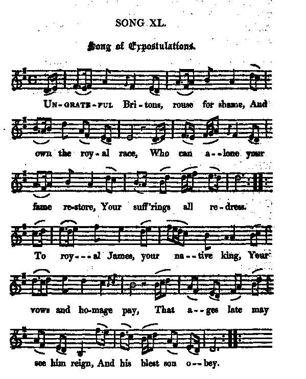
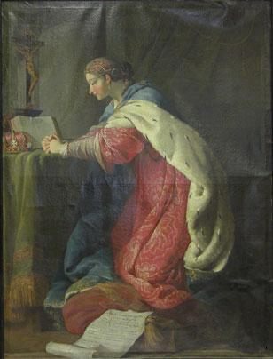

Song of Expostulation
Chant de protestation
Author unknown (c. 1820)
Tune - Mélodie"Song of Expostulation"
from Hogg's "Jacobite Relics" 2nd Series N°40, 1821
Sequenced by Christian Souchon

|
To the tune:
"Was copied from Sir Walter Scott's loose sheets, and is rather an overcharged piece of work...The air does not appear to be a genuine Scottish one." Source: "Jacobite Relics, 2nd series", 1821. |
A propos de la mélodie:
"Copie d'une partition séparée fournie par Walter Scott. C'est une pièce plutôt pompeuse...L'air ne semble pas vraiment écossais." Source: "Jacobite Relics, 2nd series", 1821. |

|
SONG OF EXPOSTULATIONS
1. Ungrateful Britons, rouse for shame, And own the royal race, Who can alone your fame restore, Your suff'rings all redress. To royal James, your native king Your vows and homage pay, That ages late may see him reign, And his blest son obey. 2. Your hopes, illustrious prince, now raise To all the charms of power; Propitious joys of lore and peace Already crown each hour. Prophetic Hymen join'd his voice, [1] And gave a princely son, [2] Whose ripen'd age may fill, he cries His father's widow'd throne. 3. 'T was thus, in early bloom of time, And in a reverend oak, In sacred and inspired rhyme An ancient Druid spoke: [3] " An hero from fair Clementine [4] " Long ages hence shall spring, " And all the Gods their powers combine " To bless the future king. [5] 4. " Venus shall give him all her charms, " To win and conquer hearts; " Rough Mars shall train the youth to arms; " Minerva teach him arts; [6] " Great Jove shall all those bolts supply " Which taught the rebel brood " To know the ruler of the sky, " And, trembling, own their God." [7] Source: "The Jacobite Relics of Scotland, being the Songs, Airs and Legends of the Adherents to the House of Stuart" collected by James Hogg, 2nd Series published in Edinburgh by William Blackwood in 1821. |
CHANT DE PROTESTATION
1. O Britanniques ingrats, ne rougissez-vous donc pas D'être ainsi dépossédés de votre roi? Qui donc, sinon vous, pourrait votre gloire restaurer Et à toutes vos doléances faire droit? Au roi Jacques, il convient, en tant que légal souverain, De faire allégeance et rendre honneur. Afin que les âges qui viennent puissent encor voir son règne Et celui de son fils qui sut gagner vos cœurs. 2. Prince illustre vos espoirs, tous les attraits du pouvoir Se trouvent à votre portée désormais. Joies propices à la paix et aux arts, vous couronnez Déjà chaque heure qu'égrène le sablier. Et l'Hymen fit de surcroît, prophétique, entendre sa voix, [1] Vous donnant un royal héritier [2] Qui saura, le moment venu, promettent ses cris éperdus, Occuper le trône paternel déserté. 3. Aux temps antiques déjà, quand le monde s'éveilla, Du haut de son chêne vénérable un jour Dans un poème inspiré par des présages sacrés Un ancien Druide tint ce solennel discours: [3] "Un héros un jour viendra que Clémentine engendrera [4] Longue sera sa postérité. Alors tous les dieux accourront et leurs forces ils uniront Pour que ce futur roi soit heureux et comblé: [5] 4. Venus va lui conférer ses charmes et sa beauté Afin qu'il puisse conquérir tous les cœurs; Et Mars aux armes saura habituer son jeune bras; Minerve lui montrera l'art et sa grandeur. [6] Puis Jupiter à son tour, viendra brandir sa foudre pour Enseigner aux rebelles conjurés Qu'il y a là-haut dans le ciel un Dieu dont l'arrêt éternel Doit par tous et en tremblant être respecté." [7] (Trad. Christian Souchon (c) 2010) |
|
[1]
James Francis Stuar
t married Maria Clementina Sobieska, the granddaughter of the king of Poland John Sobieski, on 3rd September 1719
[2] She gave him a son on 31st December 1720, Charles Edward, "Bonnie Prince Charlie" . [3] Oak, Druid : the "reverend oak" evokes both the Britons' resistance of the Romans and Charles II's almost miraculous escape from the pursuing Roudheads in 1651. [4] Maria Clementina Sobieska (1702 - 1735), grand-daughter of the famous and courageous King John Sobieski of Poland, was betrothed to James Francis Stuart. To please King George I of Great Britain, she was arrested when on her way to marry her fiancé and confined in Innsbruck Castle by Emperor Charles VI. She managed to escape to Bologna where she was married by proxy to James who was in Spain at that time. Her father approved both her escape and her marriage. They were formally married on 3rd September 1719 in the Episcopal palace of Montefiascone. Then they were invited to reside in Rome by Pope Clement XI who acknowledged them as the King and Queen of the three Kingdoms. Soon after her second child, Henry's birth (1725), she left her husband and went to live in a Dominican convent in Rome. It was more than two years before they reconciled. She died in 1735 , aged 32, and buried with full royal honours in St. Peter's Basilica. [5] The "future King" is, of course, Charles Edward but also the legendary "Good King" who shall come and restore the country to its ancient greatness (cf. Will ye no... ). [6] Venus, Mars, Minerva : Images of rural fertility and national renewal accompanying the restoring of the Stuarts are taken from classical mythology, like here or in John McLachlan's poem , though they root in Celtic tradition. [7] I. e. the principle of primogeniture is of divine essence. |
 Marie Clémentine Sobieska |
[1]
Jacques François Stuart
épousa Marie Clémentine Sobieska, petite fille du roi de Pologne, Jean Sobieski, le 3 septembre 1719.
[2] Elle lui donna un fils le 31 décembre 1720, Charles Edouard, "Bonnie Prince Charlie". [3] Chêne, Druide : le "chêne vénérable" rappelle à la fois les Druides de Bretagne animant le résistance aux Romains et la miraculeuse évasion de Charles II , recherché par les Têtes Rondes. [4] Marie Clémentine Sobieska (1720 - 1735), petite-fille du fameux et courageux roi Jean Sobieski de Pologne, était fiancée à Jacques François Stuart. Pour plaire au roi George I de Grande Bretagne, elle fut arrêtée alors qu'elle se rendait auprès de Jacques pour se marier et enfermée au château d'Innsbruck par l'empereur Charles VI. Elle parvint à s'enfuir à Bologne où eut lieu un mariage par procuration avec Jacques qui se trouvait alors en Espagne. Son père approuva tant sa fuite que son mariage. Le mariage en bonne et due forme eut lieu le 3 septembre 1719 au palais épiscopal de Montefiascone. Puis le couple fut invité à résider à Rome par Clément XI qui le reconnut comme roi et reine des trois royaumes. Peu après la naissance de son second fils, Henri (1725), Clémentine quitta son époux pour se retires dans un couvent dominicain de Rome. Le couple se réconcilia plus de deux ans après. Elle mourut en 17352, à l'âge de 32 ans et son enterrement à la Basilique Saint-Pierre de Rome fut celui d'une reine. [5] Le "futur roi" est, bien sûr, Charles Edouard, mais c'est aussi le "Bon Roi" de la légende qui viendra restaurer la grandeur de la patrie (cf. Will ye no... ). [6] Vénus, Mars, Minerve : les images qui évoquent la fertilité rurale et le renouveau national induits par la restauration des Stuarts sont tirées de la mythologie classique, comme ici ou chez John McLachlan's poem , mais sont une figure de la tradition celtique. [7] C.à.d. que le principe de primogéniture est d'essence divine. |
|
|
||